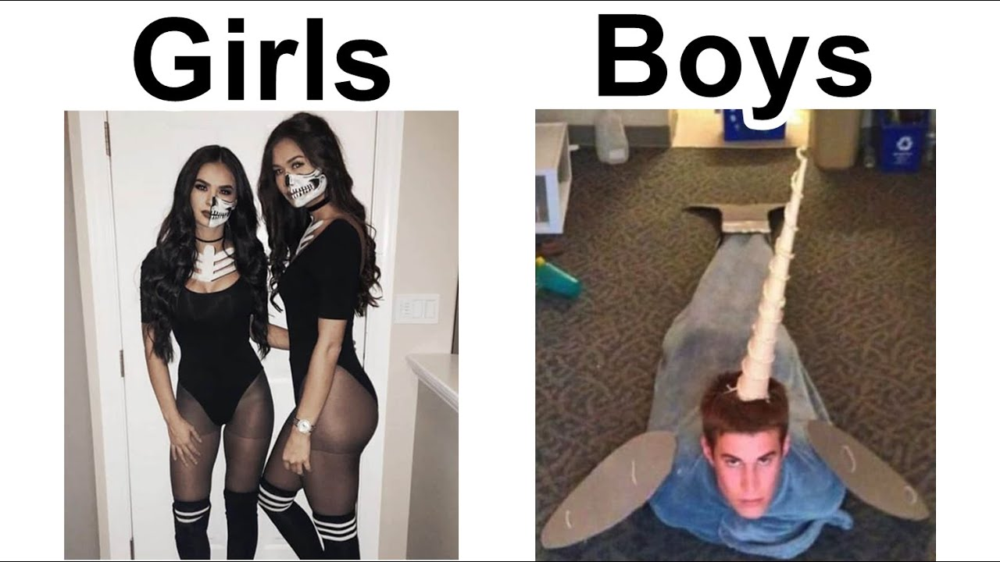

S17
Welcome to SATI ig
I used to live here, right here would be my study table.
so, how's the room? This is the biggest room in the hostel. Only issue is ventilation, this room has no windows like the other rooms. Plus in winters, not so in summers.
Its still not clear to me if this hostel will be boy hostel or girl hostel, but i'll try to keep this page gender neutral.

I assume it's your first day here, new place, new vibes. Missing your parents? ofcourse you are, if you are not then it's a serious issue. Hoping you are not coming from kota, From kota to SATI, what a waste of money that must have been.
btw, on side note, you still have time, you can still leave the college and get your money back. To me the college gives a typical government institute vibes, no study, no infra, no response from faculty. But the friends i made along the way, is what's keeping me from leaving this college.
This page is made to lower your expectation. High expectation leads to big shocks, and that's not good for health. There is a reason why all of this exists, and it's for you. My brain as soon I go to sleep:

Name of the game is history lessons, I teach history.
This page is specifically made for the one who is sitting on this table. Hope this table is still in S17, and if you are reading this, drop me a mail at the address given at the bottom of this page. Just so i know, that someone was able to read this. There's more this, where i give random advice/views, you can find it at
what all can i add here?
- lmfao
- tea
single div
single div
single div
single div
single div
single div